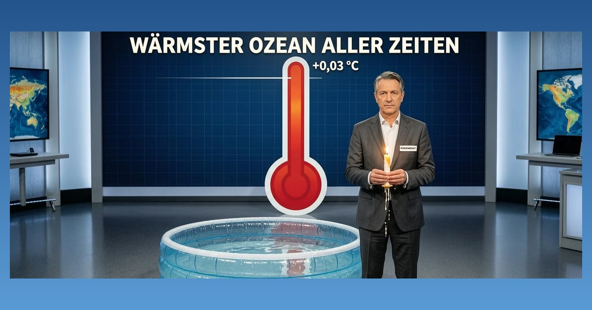

Wärmster Ozean aller Zeiten — um 0,03 Grad

Die Weltmeere waren zu Sommerbeginn an der Oberfläche so warm wie nie zuvor an einem 21. Juni. Das EU-Programm Copernicus maß 20,86 Grad, der Copernicus-Meeresdienst 21,0 Grad. Zwei unabhängige Messreihen, solide Daten, echter Rekord. So weit die Wissenschaft.
Dann kommt der Sender. Der bisherige Rekord aus 2023 lag bei 20,83 Grad, der neue bei 20,86. Der Vorsprung, mit dem hier „so warm wie noch nie“ getitelt wird, beträgt drei Hundertstel Grad. Beim Meeresdienst sind es 0,1 Grad. Messbar, real — und ungefähr der Unterschied, den Ihre Hand im Badewasser nicht spürt.
Interessant ist, was ganz unten in der Meldung steht: Copernicus selbst nennt den Rekord „zu erwarten“, weil das natürliche Klimaphänomen El Niño den Effekt derzeit verstärkt. Ein zu erwartender Rekord um drei Hundertstel, mitverursacht von einem natürlichen Zyklus — daraus baut der zwangsfinanzierte Sender die große Betroffenheitsmeldung, während die einordnende Erklärung dorthin wandert, wo die meisten nicht mehr weiterlesen.
Niemand bestreitet, dass die Meere sich erwärmen. Die Ozeane nehmen Wärme auf, die Kurve zeigt nach oben, das ist keine Meinung. Bestreitbar ist die Dramaturgie: Wenn jeder Stichtag zum „nie dagewesenen“ Rekord wird, obwohl er den Vorjahreswert um ein Wimpernschlag-Maß schlägt, nutzt sich das Wort ab.
Quelle: science.orf.at/stories/3236230 (Meere so warm wie noch nie, science.ÖRR.at, 1. 7. 2026) · Messwerte laut Copernicus/Copernicus-Meeresdienst lt. derselben Meldung
← Zurück zur Startseite